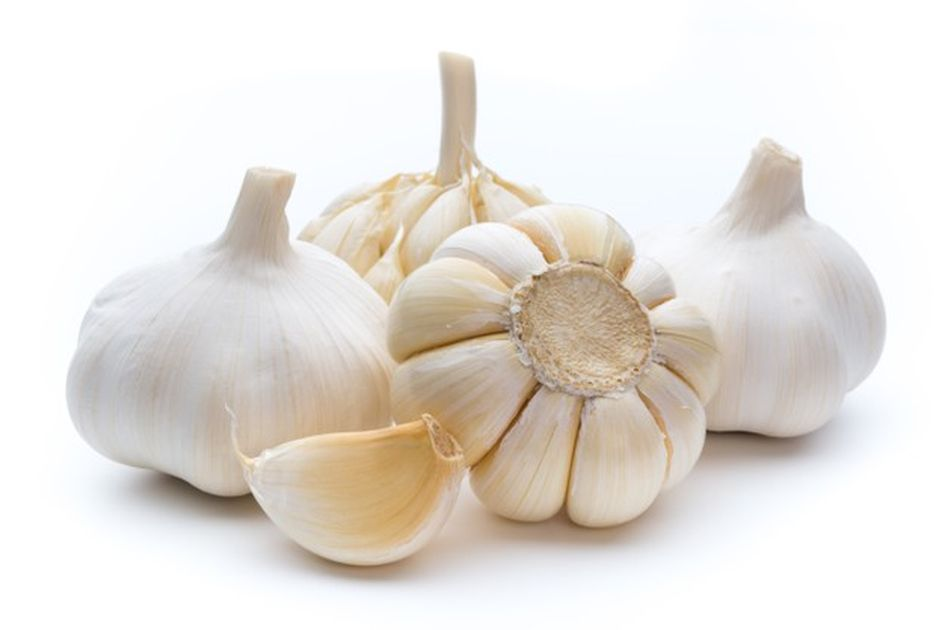
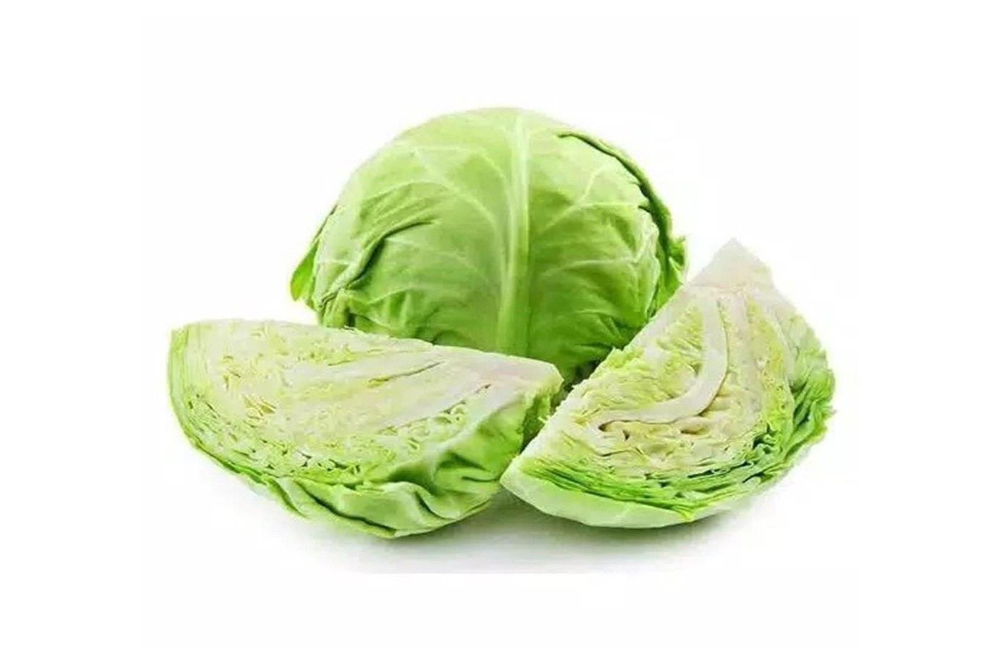
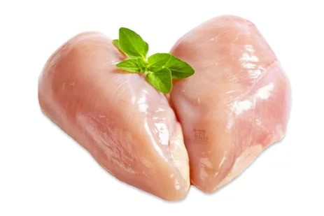
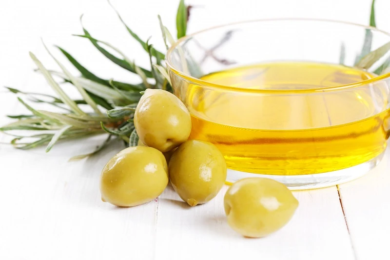
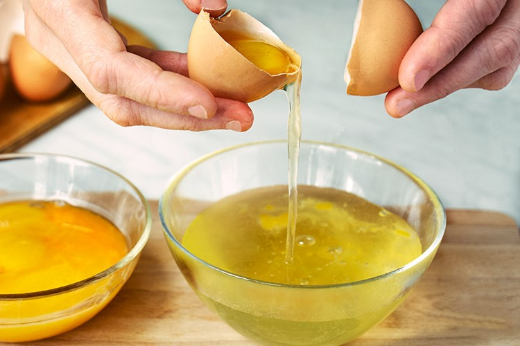

Ternyata Ini Waktu Yang Tepat untuk Berhubungan Intim, Pasutri Perlu Tahu!
Rekomendasi Makanan Untuk Pengidap Chronic Kidney Disease (CKD)

BAWANG PUTIH
Orang dengan masalah ginjal disarankan untuk membatasi jumlah natrium dalam makanannya, termasuk menambahkan garam. Nah, bawang putih bisa dijadikan alternatif yang lezat untuk garam. Selain menambah rasa pada hidangan, bawang dapat memberikan manfaat nutrisi. Ini adalah sumber mangan, vitamin C dan vitamin B6 yang baik dan mengandung senyawa sulfur yang memiliki sifat anti-inflamasi.

BLUEBERRY
Bluberi mengandung antioksidan bernama antosianin yang dapat melindungi tubuh dari penyakit jantung, kanker, penurunan kognitif, dan diabetes. Bluberi juga termasuk buah yang aman untuk ginjal karena rendah sodium, fosfor, dan kalium.

KUBIS
Kubis masuk dalam keluarga sayuran silangan dan sarat dengan vitamin, mineral, serta senyawa tanaman yang kuat. Sayuran yang satu ini juga sumber vitamin K, vitamin C, dan banyak vitamin B. Tidak sampai disitu, kubis menyediakan serat tidak larut, sejenis serat yang menjaga sistem pencernaan tetap sehat dengan mendorong buang air besar secara teratur. Ditambah lagi, sayuran yang satu ini rendah kalium, fosfor, dan natrium.

AYAM TANPA KULIT
Walaupun beberapa pengidap masalah ginjal perlu membatasi asupan protein, protein yang berkualitas tinggi dalam jumlah yang cukup sangat penting untuk kesehatan. Dada ayam tanpa kulit mengandung lebih sedikit fosfor, kalium, dan natrium dibandingkan ayam berkulit. Jadi, sebaiknya pilih dada ayam tanpa kulit untuk seseorang yang mengidap penyakit ginjal.

MINYAK ZAITUN
Minyak zaitun adalah sumber lemak yang sehat dan bebas fosfor. Sering kali, pengidap penyakit ginjal lanjut mengalami kesulitan menjaga berat badan. Oleh karenanya, konsumsi makanan sehat dan berkalori tinggi seperti minyak zaitun amat dibutuhkan. Mayoritas lemak yang terkandung minyak zaitun adalah asam oleat, yakni lemak tak jenuh tunggal yang memiliki sifat anti-inflamasi.

PUTIH TELOR
Putih telur merupakan makanan untuk penyakit ginjal yang mengandung protein berkualitas tinggi. Berbeda dengan kuning telur yang tinggi fosfor, putih telur ramah terhadap ginjal karena rendah fosfor.